Compare key supervised learning approaches (linear models, k-NN, decision trees, random forests, and support vector machines) with respect to their assumptions, flexibility, interpretability, and typical application scenarios.
Explain the core mechanics of selected algorithms, including regularization in linear models, distance-based prediction (k-NN), recursive partitioning (decision trees), ensemble learning (random forests), and margin maximization (SVMs).
Select and justify an appropriate modeling approach for a given predictive task, considering data characteristics, performance metrics, and the trade-off between interpretability and predictive power.
Classification vs. Regression & Model Families
Many models can handle classification (predicting categories) and regression (predicting numeric values).
Model family
Classification
Regression
Linear models
Logistic regression (Ridge/Lasso)
Linear regression (Ridge/Lasso)
Distance-based models
k-NN (classification)
k-NN (regression)
Tree-based models
Decision trees, Random Forest (classification)
Decision trees, Random Forest (regression)
Margin-based models
Support Vector Machine (SVC)
Support Vector Regression (SVR)
Neural networks
Neural networks (classification)
Neural networks (regression)
Which model should we choose for a given predictive task?
→ depends on:
prediction task (classification vs regression)
data structure
complexity of relationships
need for interpretability vs. performance
Linear models
Regularization
Linear models are simple and interpretable—but they can still overfit.
Especially problematic when:
many features (high-dimensional data)
features are correlated or redundant
noise is present in the data
Without constraints:
the model fits the training data very well
but performs poorly on new data (low generalization)
Core idea of Regularization
Prefer simpler models that fit the data well enough
We modify the objective or loss function (in linear regression: minimizing RSS / OLS):
Lasso (L1): shrinks and sets some coefficients exactly to zero
Key takeaway
Good models balance fit and simplicity
→ Regularization helps control complexity and improve generalization
High dimensionality in linear regression models (I)
The figure illustrates the risk of applying OLS when the number of features p is large. The model \(R^2\) increases to 1 as the number of features increases, and the training set MSE decreases to 0. At the same time, the MSE on a test set becomes extremely large as the number of features increases.
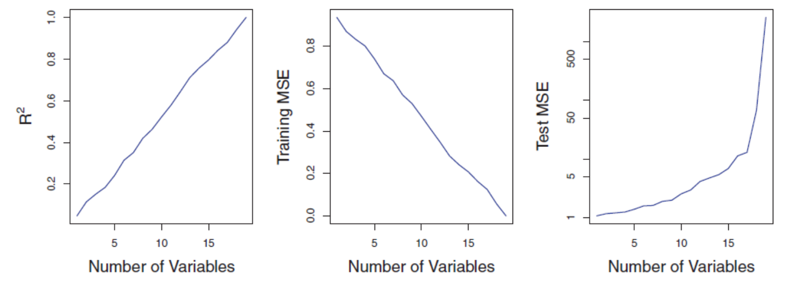
In contrast, methods like ridge regression are particularly useful for performing regression in the high-dimensional setting. Essentially, these approaches avoid overfitting by using a less flexible fitting approach than least squares.
High dimensionality in linear regression models (II)
OLS is not suitable for high-dimensional data. Especially when the number of features p is as large as, or larger than, the number of observations, OLS cannot be applied. Regardless of whether or not there truly is a relationship between the features and the response, OLS will yield a set of coefficient estimates that result in a perfect fit to the data, such that the residuals are zero.
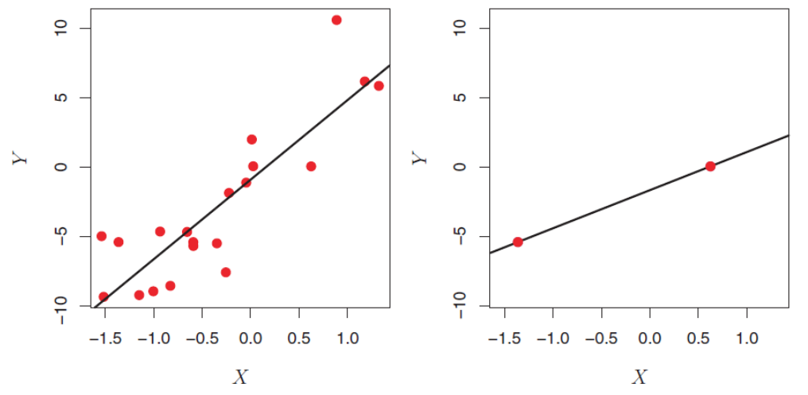
The figure shows two cases. When there are 20 observations, n > p and the OLS line does not perfectly fit the data. When there are only two observations, then regardless of the values of those observations, the regression line will fit the data exactly. This is problematic because this perfect fit will almost certainly lead to overfitting of the data.
Ridge Regression
Ridge Regression is an enhancement of OLS using a technique that constrains or regularizes the coefficient estimates. This is done by shrinking the coefficient estimates towards zero resulting in a gain in robustness and a higher generalization ability.
Similar to OLS, Ridge Regression estimates the parameters of the function
\[y_i = \beta_0 + \beta'x_i+v_i\]
but instead of minimizing the residual sum of squares (\(v^2\)), the function to minimize is
where \(\lambda ≥ 0\) is a tuning parameter, to be determined separately. It is called a shrinkage penalty and has the effect of shrinking the estimates of \(\beta_j\) towards zero. This is equivalent to reducing complexity.
\(\lambda\) is not applied to the intercept \(\beta_0\) !
Complexity and generalisation
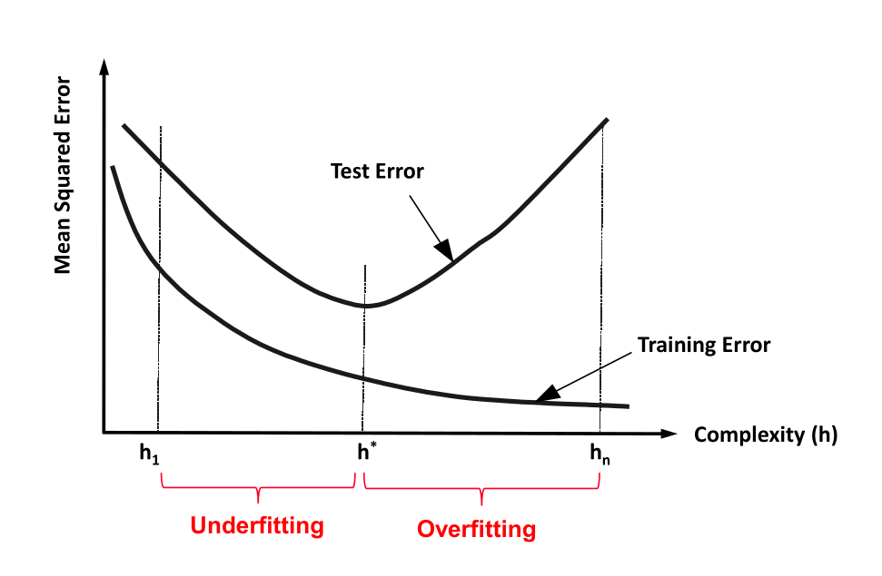
Relationship of \(\lambda\) and Complexity
\(\lambda \rightarrow \infty\): Lowest complexity
The ridge regression coefficients are equal to zero. For every input, the result is \(\beta_0\).
\(\lambda = 0\): Relative high complexity (linear model)
The penalty term has no effect, and ridge regression will produce the least squares estimates.
Example:
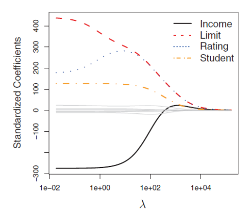
Distance-based models: k-NN
k-NN for classification
k-Nearest Neighbors (k-NN) is often used for clustering, but it can also be adapted to classification and regression tasks. It is particularly useful in settings where a set of observations has already been labeled, and the objective is to assign labels or predict values for new, unlabeled observations.
The method operates by identifying the k most similar observations to a given data point, based on a chosen distance metric (e.g., Euclidean distance). In classification tasks, the new observation is assigned the class label that is most frequent among its k nearest neighbors.
Procedure of k-NN for classification:
Determine parameter k (= number of nearest neighbors)
Calculate the distances between the new object and all known labeled objects.
Choose the k objects from all known labeled objects having the smallest distance to the new object as nearest neighbors.
Count the frequencies of the classes of the nearest neighbors.
Assign the new object to the most frequent class.
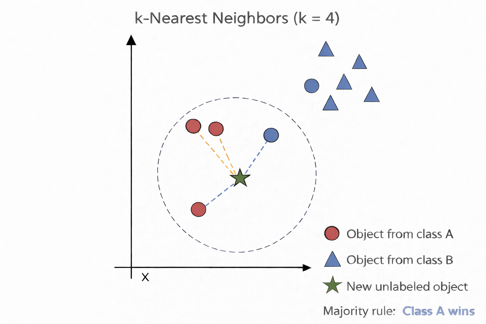
k-NN for regression
k-NN can also be used for regression. The only difference in regression is that the prediction is not the result of a majority vote but of an averaging process.
A simple implementation of k-NN regression is to calculate the average of the numerical target of the k-nearest neighbors. Another approach uses an inverse distance weighted average of the K-nearest neighbors. KNN regression uses the same distance functions as KNN classification.
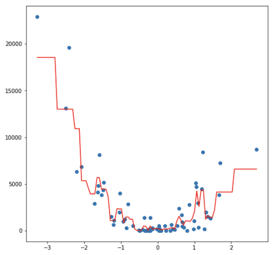
Decision trees
Which one is better?
The following decision trees predict whether a person will respond to recent advertisements:
Introductory Example
Decision Trees (I)
Decision trees are hierarchical models used for classification and regression, based on recursive partitioning of the feature space.
A decision tree consists of:
a root node (topmost node, contains all observations)
internal (decision) nodes (perform splits based on features)
Each internal node splits the data into disjoint subsets based on a feature and a splitting criterion (e.g., Gini index, entropy, or RSS).
The tree is built recursively:
Start with all observations at the root
Select the feature and split that best improves homogeneity
Partition the data accordingly
Repeat the process for each subset until a stopping criterion is met
If each node has exactly two child nodes, the tree is called a binary tree.
Decision Trees (II)
Decision tree models partition the feature space into a set of regions by recursively splitting the data to achieve maximum homogeneity within each region.
They can be interpreted as a set of decision paths: for a given combination of predictor values, an observation follows a specific path from the root to a leaf node, where a prediction (classification or regression) is assigned.
Decision trees make few assumptions about the functional form of relationships or data distributions. In contrast to parametric models (e.g., linear regression), they can capture nonlinear patterns, interactions, and complex structures in the data that are difficult to model with linear approaches.
Overview of important Decision Tree Methods
Name
CART
ID3
C5.0
CHAID
Random Forests
Idea
Choose the attribute with the highest information content
One of the first methods from Quinlan; uses the concept of information gain
Like ID3 based on the concept of information gain
Choose the attribute that is most dependent on the target variable
Construct many trees with different sets of features and samples (randomly). Result by voting.
Measure used
Gini-Index
Information gain (entropy)
Ratio of information gain
Chi-square split
Optional, mostly Gini-Index
Type of Splitting
Binary
Complete, pruning
Complete, pruning
Complete, pruning
Complete
Introductory example
Splitting with entropy in ID3
ID3 uses entropy as a measure of impurity of a node \(t\):
No need to memorize the formula. However, you should be able to calculate entropy and
apply the algorithm on paper when the formula and data are provided. This also applies to C5.0.
Calculating the information gain
The information gain is a measure, that shows (by combination of the entropies) the appropriateness of an attribute for splitting:
We choose the attribute with the largest information gain
→ Outlook is used for the first split
How ID3 builds the tree
ID3 is a greedy, recursive procedure:
At each node:
Compute information gain for all remaining attributes
Select the best attribute (highest gain)
Split the data
Repeat the process within each subset
This continues until:
nodes are pure, or
no attributes remain
As solution we obtain the following tree:
Decision using C5.0
ID3 tends to favor attributes that have a large number of values, resulting in larger trees. For example, if we have an attribute that has a distinct value for each record, then the entropy is 0, thus the information gain is maximal.
To compensate for this, C5.0 is a further development that uses the information gain ratio as a splitting criterion:
Numerical attributes are usually splitted binary. In contrast to categorical attributes many possible splitting points exist.
The splitting point with the highest information gain is looked for. For this, the potential attribute is sorted according to its values first and then all possible splitting point and the corresponding information gains are calculated. In extreme cases there exists n-1 possibilities.
Test the splitting point \(\text{temperature} = 71.5\):
Most decision tree algorithms partition training data until every node contains objects of a single class, or until further partitioning is impossible because two objects have the same value for each attribute but belong to different classes. If there are no such conflicting objects, the decision tree will correctly classify all training objects.
If tree performance is measured from the number of correctly classified cases it is common to find that the training data gives an over-optimistic guide to future performance, i.e. with new data. A tree should exhibit generalization, i.e. work well with data other than those used to generate it. When the tree grows during training it often shows a decrease in generalization. This is because the deeper nodes are fitting noise in the training data not representative over the entire universe from which the training set was sampled. This is called ‘overfitting’.
Random Forest (I)
Random forest is an ensemble classifier that consists of many decision trees.
For every tree a subset of the data objects and a subset of features is randomly chosen. Then the tree is constructed usually using the Gini Index.
In the end, a simple majority vote is taken for prediction.
Algorithm:
Create n samples from the original data. Frequent sample size is 2/3.
For each of the samples, grow a tree, with the following modification: at each node, rather than choosing the best split among all predictors, randomly sample m* of the m predictors and choose the best split from among those variables.
Predict by aggregating the predictions of the n trees (majority votes).
Random Forest (II)
Voting principle of Random Forest:
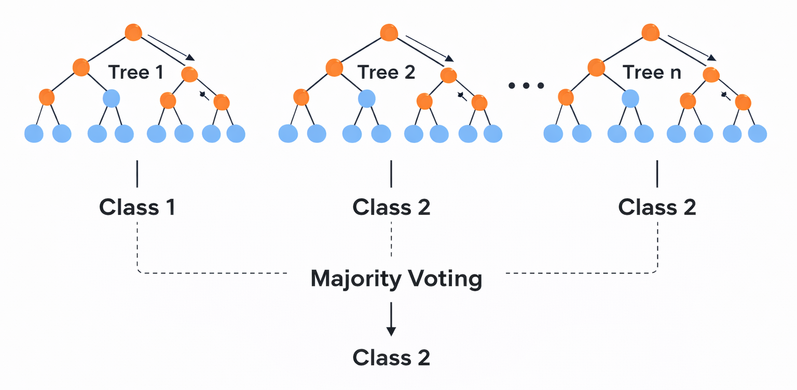
To avoid overfitting effects, the size and the depth of the trees can be restricted.
Regression Trees
Some of the tree approaches can be used for regression too. They can be used for nonlinear multiple regression. The output must be numerical.
The figure shows a regression tree for predicting the salary of a baseball player, based on the number of years that he has played in the major leagues and the number of hits that he made in the previous year. The predicted salary is given by the mean value of the salaries in the corresponding leaf, e.g. for the players in the data set with Years<4.5, the mean (log-scaled) salary is 5.11, and so we make a prediction of \(e^{5.11}\) thousands of dollars, i.e. $165,670, for these players.
Players with Years>=4.5 are assigned to the right branch, and then that group is further subdivided by Hits. The predicted salaries for the resulting two groups are \(1,000*e^{6.00} =\$403,428\) and \(1,000*e^{6.74} =\$845,346\).
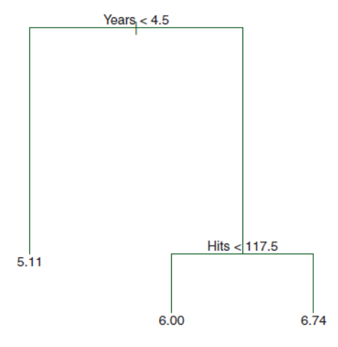
Constructing a regression tree (I)
A regression tree partitions the data objects in the feature space into regions \(R_j\), represented by the leaves of the tree. To construct the tree, the goal is to find regions that minimize the RSS, given by
where \(\bar{y}_{R_j}\) is the mean value for the training observations within the jth region with \(\hat{y}_{R_j} = \bar{y}_{R_j}\).
To perform the recursive binary splitting, we first select the feature \(X_j\) and the cutpoint \(s\) such that splitting the feature space into the regions \(X_j < s\) and \(X_j \ge s\) leads to the greatest possible reduction in RSS. We consider all features and all possible values of the cutpoint s for each of the features, and then choose the feature and cutpoint such that the resulting tree has the lowest RSS.
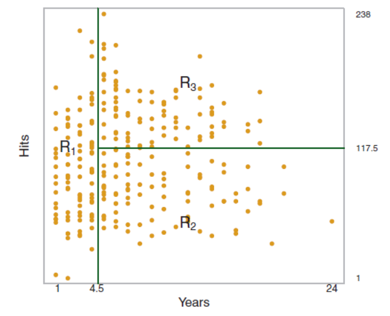
Constructing a regression tree (II)
For any feature j and cutpoint s, we seek the value of j and s that minimizes
where \(\bar{y}_{R_1}\) is the mean value for the training observations in \(R_1(j,s9\), and \(\bar{y}_{R_2}\) is the mean value for the training observations in \(R_2(j,s)\). After splitting, we repeat the process, looking for the best feature and best cutpoint in order to split the data further so as to minimize the RSS within each of the resulting regions. The process continues until a stopping criterion is reached; for instance, we may continue until no region contains more than five observations. Once the regions R1, . . . , RJ have been created, we predict the objects from the test set. To handle the problem of overfitting, pruning methods exist even for regression trees.
Random Forests for Regression
Due to the usage of means as predictors a regression tree usually simplifies the true relationship between the inputs and the output. The advantage over traditional statistical methods is, that it can give valuable insights about which variables are important and where. But the prediction ability is poor compared to other regression approaches.
A much better prediction quality can be achieved with the creation of an ensemble of trees, use them for prediction and averaging their results. This is done, when applying the Random Forests approach to a regression task.
Regression Forests are an ensemble of different regression trees and are used for nonlinear multiple regression. The principle is the same as in classification, except that the output is not the result of a voting but instead of an averaging process.
The disadvantage of Random Forests is that the analysis, which aggregates over the results of many bootstrap trees, does not produce a single, easily interpretable tree diagram.
Comparing the Fitting Ability of one vs. many Regression Trees
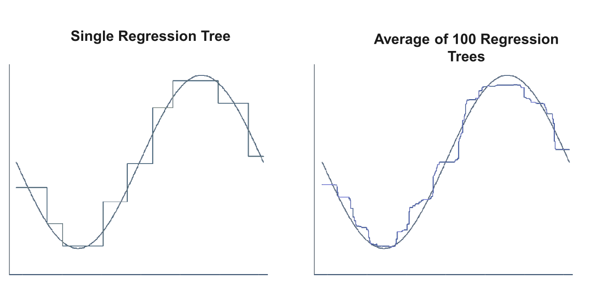
Limitations of Tree Methods in Regression
When applied to regression problems, tree methods have the limitation that they cannot exceed the range of values of the target variable used in training. The reason for this lies in their design principle, how the leaves of the trees are created.
Thus, Random Forests may perform poorly when the target data is out of the range of the original training data, e.g. in the case of data with persistent trends. A solution may be a frequent re-training in this case.
An important strength of Random Forests is that they are able to perform still well in the case of missing data. According to their construction principle, not every tree is using the same features.
If there is any missing value for a feature during the application there usually are enough trees remaining that do not use this feature to produce accurate predictions.
Support vector machines
The idea: separating with a line (or hyperplane)
Imagine you have two groups of points. SVM tries to separate them with a line (in 2D) or a hyperplane (in higher dimensions).
Mathematically, a hyperplane is:
\[w^\top x + b = 0\]
\(x\): data point (features, e.g., income, age)
\(w\): weight vector (defines orientation)
\(b\): bias (shifts the line)
The predictions are:
Class +1 if \(w^\top x + b > 0\)
Class −1 if \(w^\top x + b < 0\)
The key insight: maximize the margin
SVM doesn’t pick just any separating line. It chooses the one with the largest margin (distance to the closest points).
Constraint ensures correct classification with margin
Interpretation: We want all points correctly classified and as far from the boundary as possible.
Allowing mistakes (soft margin)
Real-world data is messy. So we allow violations using slack variables \(\xi_i\):
\[\min_{w,b} \frac{1}{2} |w|^2 + C \sum_i \xi_i
\quad \text{subject to} \quad
y_i (w^\top x_i + b) \geq 1 - \xi_i\]
\(\xi_i\): how much a point violates the margin
\(C\): regularization parameter (trade-off)
Large (C): fewer mistakes, tighter fit
Small (C): more tolerance, smoother boundary
Nonlinear boundaries via the kernel trick
What if data isn’t linearly separable?
Instead of transforming data explicitly, SVM uses a kernel function:
\[K(x_i, x_j) = \phi(x_i)^\top \phi(x_j)\]
The kernel trick replaces inner products with a kernel function, allowing us to compute similarities as if the data were mapped to a higher-dimensional space—without ever computing \(\phi(x)\) directly.
Common kernels:
Linear: \(K(x_i, x_j) = x_i^\top x_j\)
Polynomial
RBF (Gaussian): captures complex patterns
Intuition: SVM can create curved decision boundaries by working in an implicit higher-dimensional space.
does not penalize acceptable deviations (defined by \(\varepsilon\))
OLS / Ridge
\[\xi_i = v_i^2\]
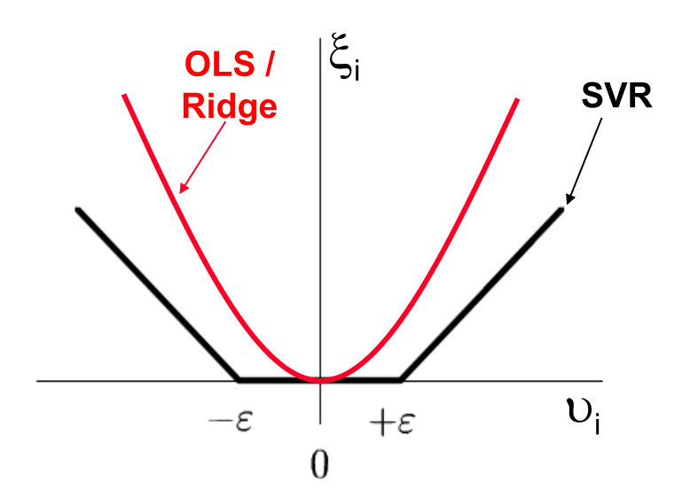
Insensitive Loss Function (II)
Using the \(\epsilon\)-insensitive loss function, only those data objects are considered in the estimation, which have a distance greater than \(\epsilon\) from the regression function:
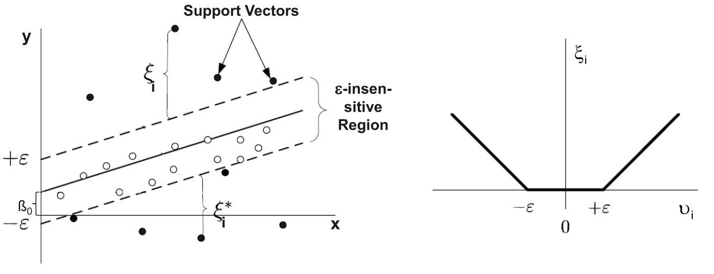
Every object inside the \(\epsilon\)-insensitive region is ignored. It is regarded as noise.
Kernel functions
Kernel Functions are used to project n-dimensional input to m-dimensional input, where m is higher than n:
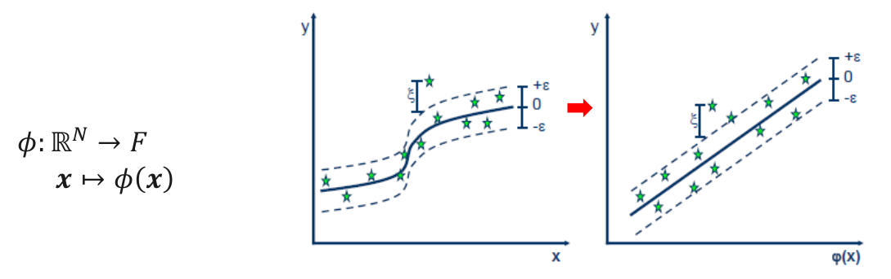
Any point x in the original space is mapped into the higher dimensional space. For reason of efficiency, the mapping is not performed in real but instead embedded in the model building process via the kernel function:
Instead of \(\beta_0 + \beta\cdot x = y\) the following is used: \(\beta_0 + \beta \cdot \phi(x) = y\).
The main idea to use a kernel is: A linear regression curve in higher dimensions becomes a non-linear regression curve in lower dimensions.
SVR examples (I)
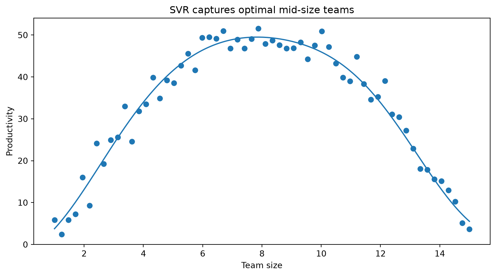
SVR examples (II)
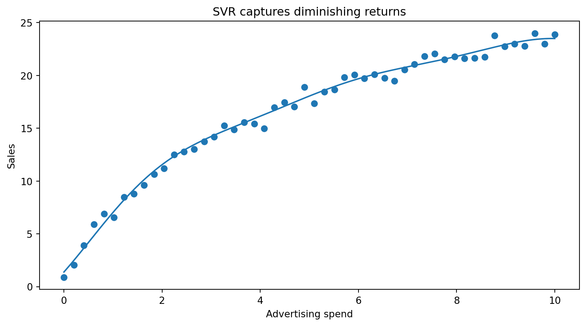
SVR examples (III)
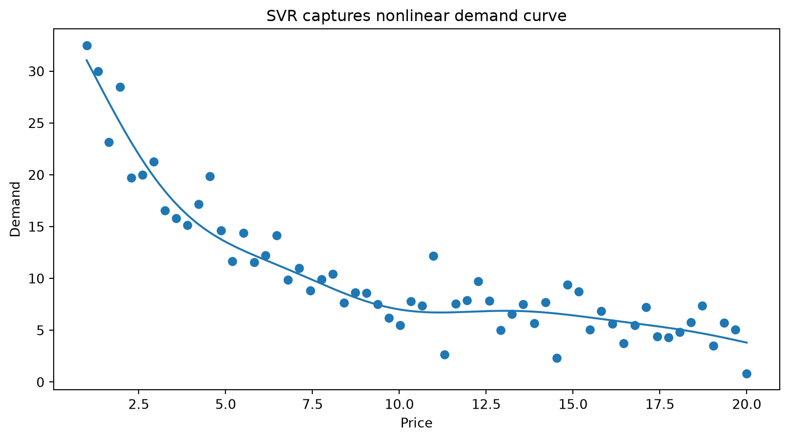
Summary
Supervised machine learning includes a variety of model families (linear, distance-based, tree-based, margin-based, neural networks) that can be applied to both classification and regression tasks. Model choice depends on data characteristics, problem complexity, and the trade-off between interpretability and predictive performance.
Different models embody different assumptions and levels of flexibility: linear models are simple and interpretable, while more flexible models (e.g., trees, SVMs, neural networks) can capture complex, non-linear relationships but are harder to interpret.
Controlling model complexity is central to achieving good generalization. Techniques such as regularization (Ridge, Lasso), parameter choices (e.g., k in k-NN, depth in trees), and margin control (SVM) balance fit and simplicity.
Key supervised learning algorithms introduced include k-Nearest Neighbors (k-NN) (distance-based), decision trees and Random Forests (tree-based and ensemble methods), and Support Vector Machines (SVMs) (margin-based models), illustrating different approaches to learning from data with varying assumptions, flexibility, and interpretability.